Ảnh chụp màn hình
Toàn bộ một lượt chơi được điều khiển bằng máy trạng thái GamePlayStateManager với 15 trạng thái, từ lúc rời màn Home tới lúc quay về.
Mô tả
- Toàn bộ một lượt chơi được điều khiển bằng máy trạng thái GamePlayStateManager với 15 trạng thái, từ lúc rời màn Home tới lúc quay về.
- Nó quyết định khi nào nạp màn, khi nào cho chạm, khi nào hiện popup thua, khi nào tính thưởng.
- GameStateService ở tầng trên phân biệt 4 bối cảnh lớn: Application, Home, GamePlay, Daily.
Còn thiếu / chưa xác minh
Mở khóa & điểm vào
Luôn hoạt động.
Điểm vào:
- Nút Play
- Nút Try Again ở popup thua
- Tiếp tục màn dở (ContinuousLevels)
Cách hoạt động
- GameStateService đặt GameStateType = GamePlay.
- GamePlayStateManager.Initialize() dựng StateMachine<GamePlayStateType>.
- FromHomeToGamePlayState chạy chuyển cảnh, rồi LevelInit nạp LevelAndLevelConfigModel và bảo SpawnerSystem dựng bàn.
- ActivePlayState bật input và LevelTimer.
- Khi LevelWinLoseHandler báo kết thúc: Win -> WinState (trao thưởng, hiện màn hình thắng); NoTime/Bomb -> StuckState (hiện popup mời Play On). Ở StuckState người chơi có ba lựa chọn: mua Play On (về ActivePlayState với thời gian cộng thêm), TryAgainState (chơi lại từ đầu, trừ 1 mạng), hoặc GamePlaySceneToHomeSceneState (bỏ về Home).
- PauseMenuState mở khi bấm nút tạm dừng; StorePauseState mở khi mở cửa hàng ngay trong màn; GamePauseState xử lý lúc app bị đưa xuống nền.
- MoveToNextSplitState dùng cho màn nhiều phần (split).
- ContinuousLevelInitState nạp thẳng màn kế tiếp mà không quay về Home — tính năng này server đang bật.
Luồng chi tiết theo code
GameStateService đặt GameStateType = GamePlay. GamePlayStateManager.Initialize() dựng StateMachine<GamePlayStateType>. FromHomeToGamePlayState chạy chuyển cảnh, rồi LevelInit nạp LevelAndLevelConfigModel và bảo SpawnerSystem dựng bàn. ActivePlayState bật input và LevelTimer. Khi LevelWinLoseHandler báo kết thúc: Win -> WinState (trao thưởng, hiện màn hình thắng); NoTime/Bomb -> StuckState (hiện popup mời Play On). Ở StuckState người chơi có ba lựa chọn: mua Play On (về ActivePlayState với thời gian cộng thêm), TryAgainState (chơi lại từ đầu, trừ 1 mạng), hoặc GamePlaySceneToHomeSceneState (bỏ về Home). PauseMenuState mở khi bấm nút tạm dừng; StorePauseState mở khi mở cửa hàng ngay trong màn; GamePauseState xử lý lúc app bị đưa xuống nền. MoveToNextSplitState dùng cho màn nhiều phần (split). ContinuousLevelInitState nạp thẳng màn kế tiếp mà không quay về Home — tính năng này server đang bật.
Ảnh chụp màn hình (15)
15 ảnh chụp trong game (LDPlayer, bản 1006, tài khoản thử level 320 → 350 (07/10/2026)). Bấm ảnh để phóng to; nhãn UC dẫn tới use case tương ứng.

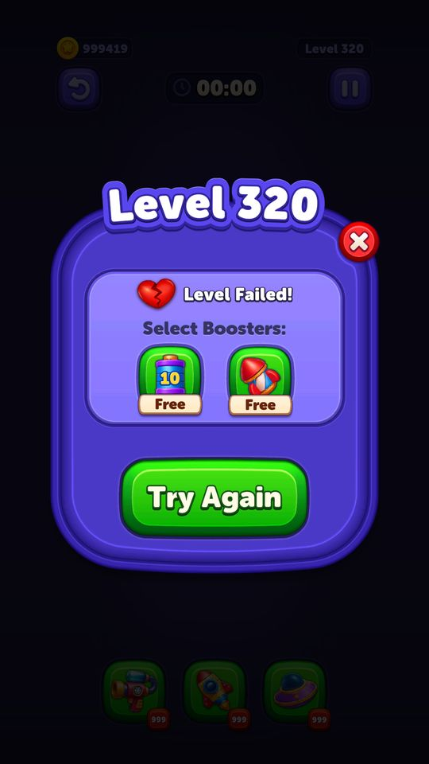

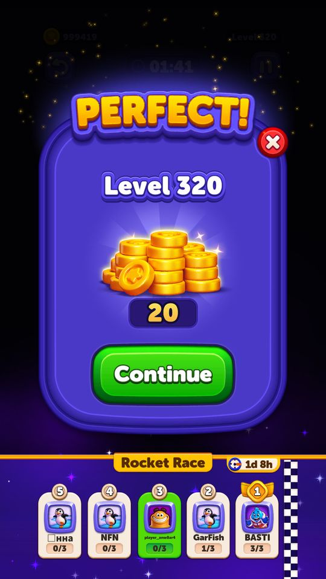

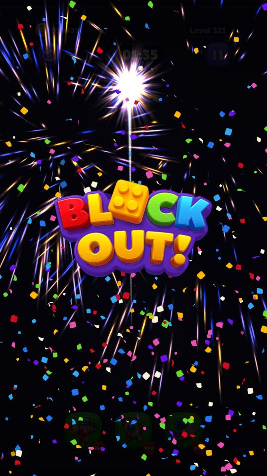

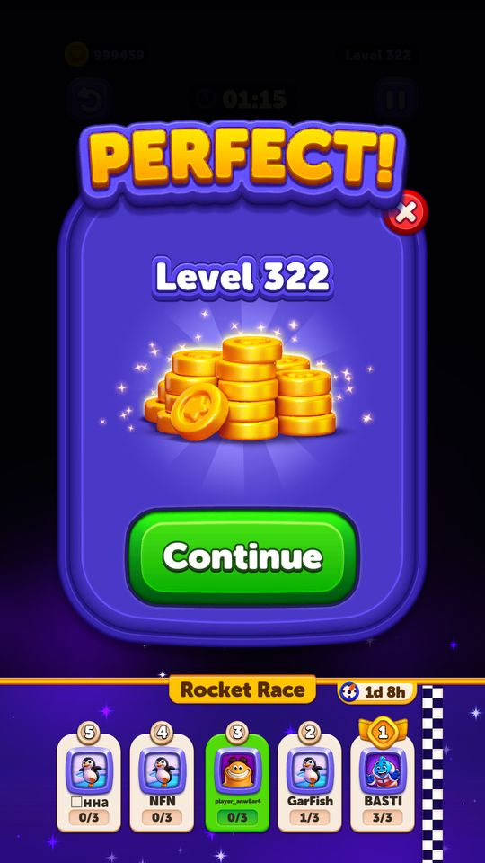

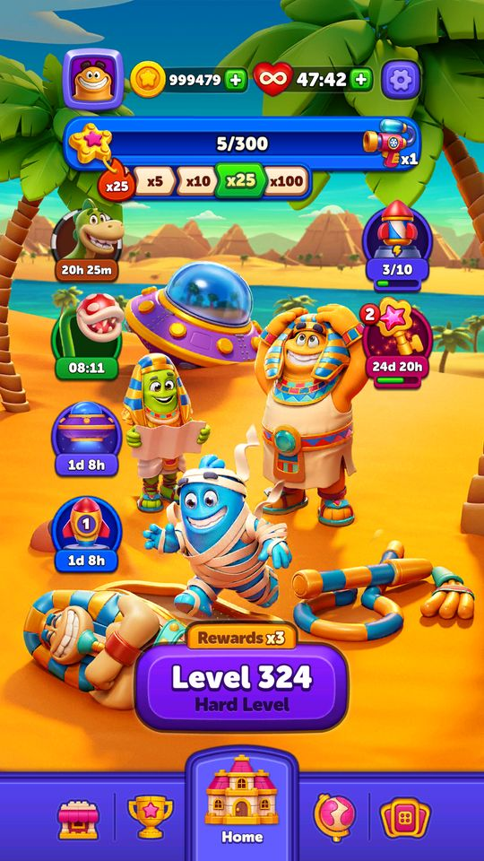

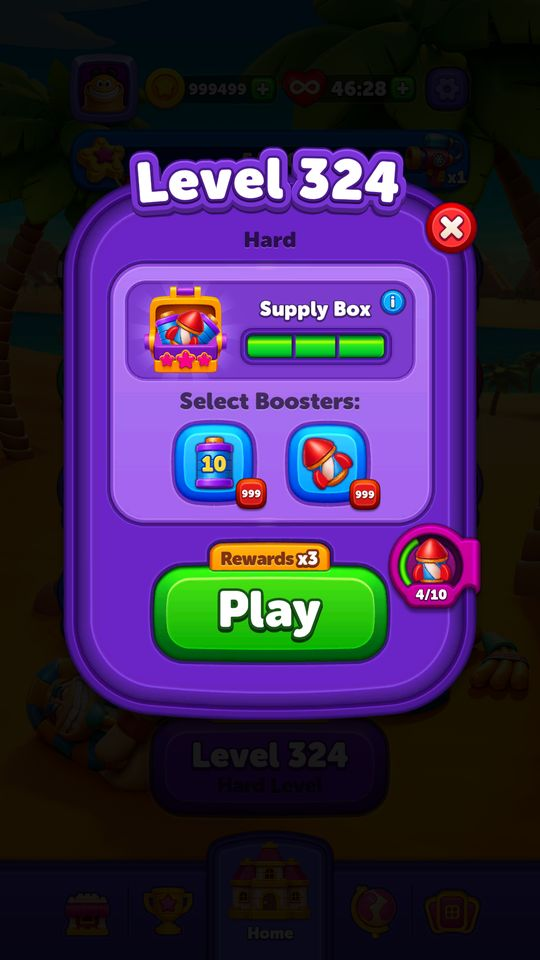

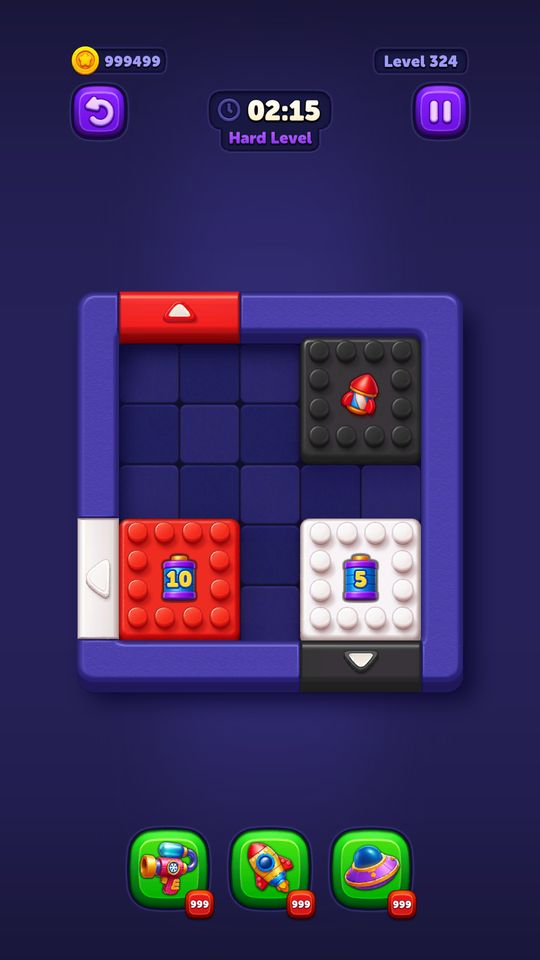

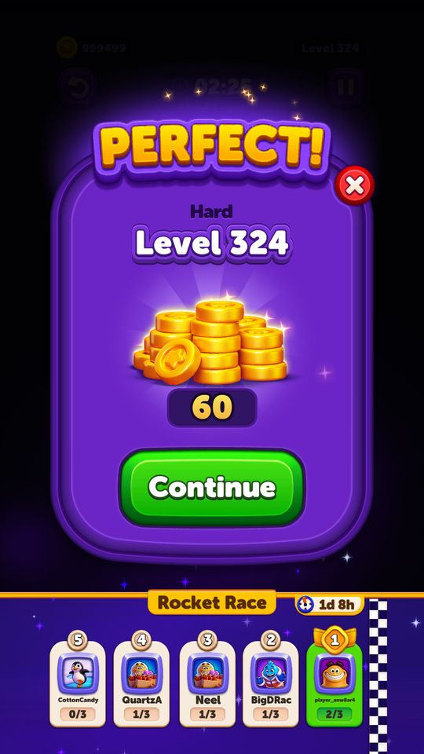

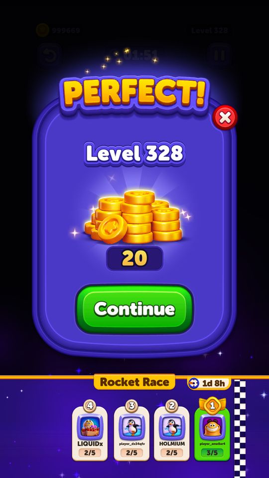

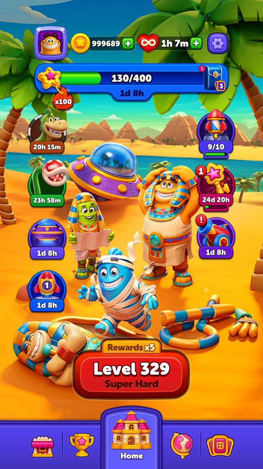

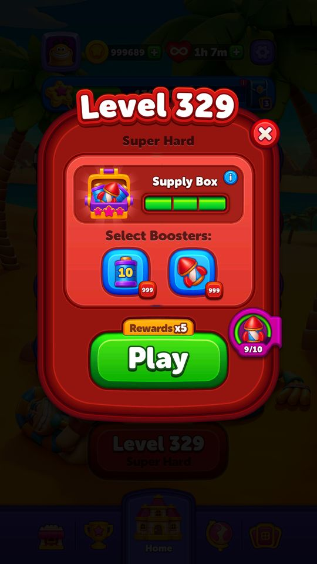

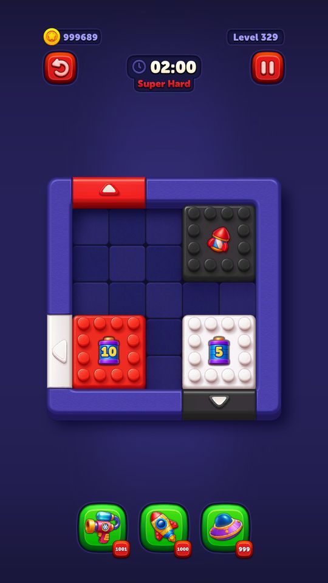

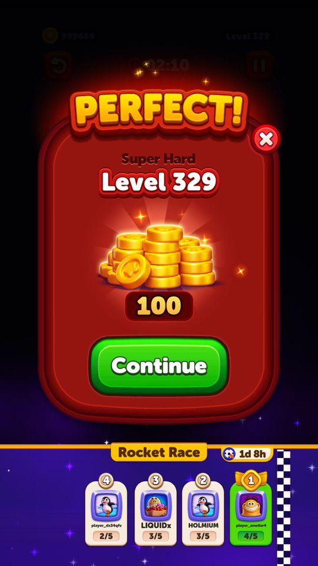

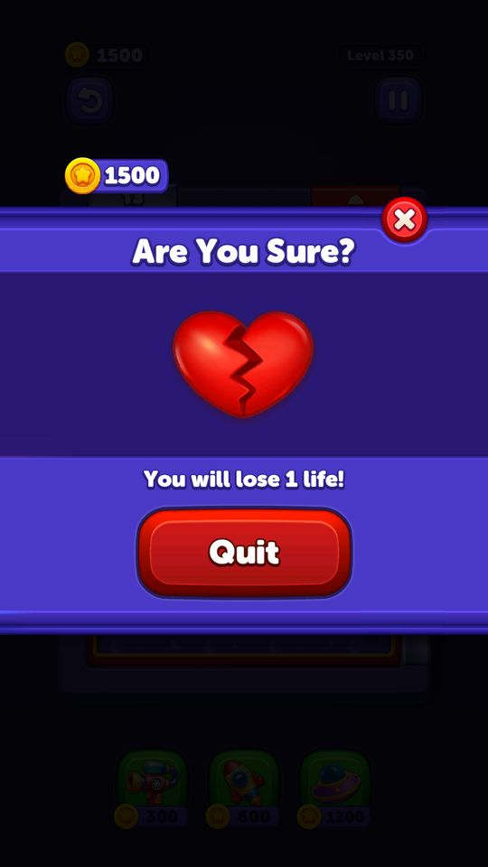

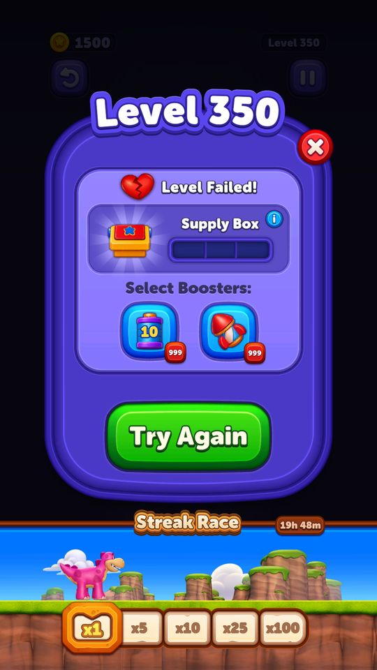
Số liệu chính
| Chỉ số | Giá trị | Nguồn |
|---|---|---|
| Ba kiểu popup thua; NoSpace dành cho trường hợp bàn hết chỗ | None=0, NoSpace=1, NoTime=2, Bomb=3 | StuckPopupType — enum StuckPopupType |
| Popup chơi lại mở từ menu thoát hay từ màn thua | Quit=0, Stuck=1 | TryAgainPopupOpenPlace — enum TryAgainPopupOpenPlace |
| ContinuousLevelsConfigModel.Level | 10 | ContinuousLevelsConfigModel.Level — Assets/Resources/defaultconfigs/ContinuousLevelsConfigModel.json |
Use case (9)
Bấm vào từng use case để mở. Mở/đóng tất cả
UC-01 Vào màn từ Home
Các bước- InventoryService.Spend(CurrencySpendReason.None, CurrencyType.Life, 1) — trừ mạng khi bắt đầu
- GameStateService đổi sang GameStateType.GamePlay
- GamePlayStateManager.FromHomeToGamePlayState() chạy chuyển cảnh
- LevelStartFlowService chuẩn bị các dịch vụ trong màn
- LevelInit: LevelModelService.GetLevelAndLevelConfigModel(progress) trả bố cục + cấu hình
- SpawnerSystem dựng bàn theo thứ tự tường → ô → tường trong → cửa → khối → cơ chế phụ
- ActivePlayState bật input, LevelTimer chạy
| Actor | Player |
|---|---|
| Trigger | Bấm nút Play |
| Điều kiện | Còn ít nhất 1 mạng |
| Kết quả | Người chơi ở trong màn, đồng hồ bắt đầu chạy |
| Quy tắc / số liệu | maxLifeAmount 5, hồi 1 mạng mỗi 30 phút (refillDurationAsMinutes) |
| Evidence | GamePlayStateManager.FromHomeToGamePlayState; LevelInit; ActivePlayState; LevelStartFlowService; LevelModelService.GetLevelAndLevelConfigModel |
UC-02 Thắng màn và nhận thưởng
Các bước- LevelWinLoseHandler đặt reason = Win
- GamePlayStateManager.WinState()
- BasicLevelManager.Win() -> LevelState.Win
- RewardService trao coin theo độ khó màn
- Các dịch vụ sự kiện nhận tín hiệu thắng để cộng tiến độ (BlockPass key, GAE, MagicLab task, Collection sao, Journey, tournament điểm)
- PlayerService tăng Progress lên màn kế
- Hiện màn hình thắng; có thể chèn quảng cáo theo AdShowPlace EarlyWin/LateWin
| Actor | System |
|---|---|
| Trigger | Bàn sạch khối |
| Điều kiện | - |
| Kết quả | Cộng coin, tăng tiến độ, cập nhật mọi sự kiện đang chạy |
| Quy tắc / số liệu | AdShowPlacesForInter server đang để [1,2,3] = EarlyWin, LateWin, Retry |
| Evidence | GamePlayStateManager.WinState; BasicLevelManager.Win; RewardService; PlayerService; AdShowPlace |
UC-03 Thua và được mời Play On
Các bước- GamePlayStateManager.StuckState()
- BasicLevelManager.Stuck() -> LevelState.Stuck
- StuckOfferCarouselController dựng popup theo StuckPopupType (NoSpace / NoTime / Bomb)
- PlayOnLogicHandler.GetCurrentPlayOnPrice() lấy giá lần mua thứ n
- Nếu ShouldShowRewardedPlayOn() thì hiện thêm nút xem quảng cáo
| Actor | System |
|---|---|
| Trigger | Hết giờ hoặc bom nổ |
| Điều kiện | - |
| Kết quả | Popup Play On với giá coin hoặc nút quảng cáo |
| Quy tắc / số liệu | Giá Play On leo thang theo số lần dùng trong màn: server đang để 900 / 1900 / 2900 coin |
| Evidence | GamePlayStateManager.StuckState; BasicLevelManager.Stuck; StuckOfferCarouselController; StuckPopupType; PlayOnLogicHandler.GetCurrentPlayOnPrice |
UC-04 Mua Play On, chơi tiếp
Các bước- PlayOnLogicHandler.TryUse() kiểm tra số dư
- InventoryService.Spend(CurrencySpendReason.PlayOn, Coin, giá)
- OnButtonClicked(extraTime) cộng thời gian: levelTimerAdditionalTime 30 giây; nếu thua vì bom thì BombBlockObstacle.PlayOnBomb(bombAdditionalTime)
- BasicLevelManager.PlayOn() -> LevelState.PlayOn
- Về ActivePlayState
| Actor | Player |
|---|---|
| Trigger | Bấm nút Play On ở popup thua |
| Điều kiện | Đủ coin |
| Kết quả | Chơi tiếp trên đúng bàn đang dở, không mất mạng |
| Quy tắc / số liệu | isFirstPlayOnFree = false (server và client đều tắt). Lần mua sau đắt hơn lần trước |
| Evidence | PlayOnLogicHandler.TryUse; OnButtonClicked; BasicLevelManager.PlayOn; BombBlockObstacle.PlayOnBomb |
UC-05 Chơi lại màn từ đầu
Các bước- TryAgainFlowService điều phối
- TryAgainPopupOpenPlace ghi nhận mở từ Quit hay Stuck
- GamePlayStateManager.TryAgainState() rồi PauseRetryState
- Trừ 1 mạng, dựng lại bàn từ đầu
| Actor | Player |
|---|---|
| Trigger | Bấm Try Again |
| Điều kiện | Còn mạng |
| Kết quả | Bàn mới tinh, đồng hồ đầy lại |
| Quy tắc / số liệu | AdShowPlace.Retry (=3) nằm trong danh sách vị trí chèn quảng cáo của server |
| Evidence | TryAgainFlowService; GamePlayStateManager.TryAgainState; PauseRetryState; TryAgainPopupOpenPlace |
UC-06 Bỏ màn về Home
Các bước- PauseMenuState mở menu
- BasicLevelManager.Quit() -> LevelState.Quit, LevelEndType.Quit
- ReturnToHomeSequenceService chạy chuỗi dọn dẹp và chuyển cảnh
- GamePlaySceneToHomeSceneState
- GameStateService về GameStateType.Home
| Actor | Player |
|---|---|
| Trigger | Bấm thoát ở menu tạm dừng |
| Điều kiện | - |
| Kết quả | Về màn Home, mạng đã trừ vẫn mất |
| Quy tắc / số liệu | - |
| Evidence | GamePlayStateManager.PauseMenuState; BasicLevelManager.Quit; ReturnToHomeSequenceService; GamePlaySceneToHomeSceneState |
UC-07 Chơi liền mạch sang màn kế (ContinuousLevels)
Các bước- Sau WinState, thay vì về Home thì vào ContinuousLevelInitState
- Nạp thẳng bố cục màn kế tiếp
- Về ActivePlayState
| Actor | System |
|---|---|
| Trigger | Thắng màn khi tính năng đang bật |
| Điều kiện | ContinuousLevelsConfigModel.IsEnabled = true và đã qua mốc Level |
| Kết quả | Chuỗi chơi liên tục, giảm số lần quay về Home |
| Quy tắc / số liệu | Server bật tính năng này (IsEnabled true) trong khi client mặc định tắt; mốc Level = 10 |
| Evidence | GamePlayStateManager.ContinuousLevelInitState; ContinuousLevelsConfigModel |
UC-08 Mở cửa hàng ngay trong màn
Các bước- GamePlayStateManager.StorePauseState()
- StorePopupHelper mở store với StorePopUpSource tương ứng (Booster / PlayOn / Refill / PreBoosterRocket / PreBoosterDuration)
- Mua xong quay lại đúng trạng thái trước đó
| Actor | Player |
|---|---|
| Trigger | Hết coin khi mua booster/Play On |
| Điều kiện | - |
| Kết quả | Mua coin/gói mà không mất màn đang chơi |
| Quy tắc / số liệu | StorePopUpSource ghi lại nguồn mở để phân tích chuyển đổi |
| Evidence | GamePlayStateManager.StorePauseState; StorePopupHelper; enum StorePopUpSource |
UC-09 Màn nhiều phần (split)
Các bước- LevelState chuyển SplitWin hoặc SplitPlayOn
- BasicLevelManager.MoveNextSplit()
- GamePlayStateManager.MoveToNextSplitState()
- Nạp phần tiếp theo, giữ nguyên đồng hồ
| Actor | System |
|---|---|
| Trigger | Hoàn thành phần đầu của màn split |
| Điều kiện | Màn được cấu hình nhiều phần |
| Kết quả | Chơi tiếp phần sau của cùng một màn |
| Quy tắc / số liệu | LevelState có riêng SplitWin=8 và SplitPlayOn=9 tách khỏi Win/PlayOn thường |
| Evidence | BasicLevelManager.MoveNextSplit; GamePlayStateManager.MoveToNextSplitState; enum LevelState |
Cấu hình (7)
Gộp mọi nguồn: const trong code, JSON mặc định trong Resources, bảng static, storage key, AB test, cờ server.
| Nguồn | Key | Kiểu | Giá trị | Ý nghĩa | Nơi định nghĩa |
|---|---|---|---|---|---|
| code const | GamePlayStateType | enum | None=0, FromHomeToGamePlayState=1, LevelInit=2, StuckState=3, WinState=7, GamePlaySceneToHomeSceneState=9, PauseMenuState=10, MoveToNextSplit=14, ActivePlayState=16, TryAgainState=17, GamePauseState=18, PauseRetryState=19, ContinuousLevelInitState=20, StorePauseState=21 | 15 trạng thái của máy trạng thái lượt chơi | enum GamePlayStateType |
| code const | LevelState | enum | None=0, Playing=1, Lose=2, Win=3, Stuck=4, PlayOn=5, Quit=6, Pause=7, SplitWin=8, SplitPlayOn=9 | Trạng thái của bản thân màn chơi | enum LevelState |
| code const | GameStateType | enum | Application=0, Home=1, GamePlay=2, Daily=3 | 4 bối cảnh lớn của app | enum GameStateType; GameStateService |
| code const | StuckPopupType | enum | None=0, NoSpace=1, NoTime=2, Bomb=3 | Ba kiểu popup thua; NoSpace dành cho trường hợp bàn hết chỗ | enum StuckPopupType |
| code const | TryAgainPopupOpenPlace | enum | Quit=0, Stuck=1 | Popup chơi lại mở từ menu thoát hay từ màn thua | enum TryAgainPopupOpenPlace |
| json default | ContinuousLevelsConfigModel.IsEnabled | bool | true — server đang chạy; mặc định client: false | Assets/Resources/defaultconfigs/ContinuousLevelsConfigModel.json | |
| json default | ContinuousLevelsConfigModel.Level | int | 10 | Assets/Resources/defaultconfigs/ContinuousLevelsConfigModel.json |
Giao diện (UI)
| Element | Class | Mục đích |
|---|---|---|
| Menu tạm dừng | Modules.Contexts.GamePlay.UI | tiếp tục / chơi lại / thoát |
| Popup thua | Modules.Contexts.GamePlay.UI.StuckOfferCarouselController | băng chuyền các lựa chọn Play On |
| Nền trong màn | Modules.Contexts.GamePlay.UI.InLevelBackgroundController | nền theo chủ đề |
| Nhãn độ khó | Modules.Contexts.GamePlay.UI.LevelDifficultyViewController | hiện Hard / Super Hard |
Chưa đọc được / ghi chú
- Chưa xác minh được điều kiện chính xác kích hoạt StuckPopupType.NoSpace (bàn hết chỗ) — trong 999 màn t212 chưa thấy kịch bản này.
- Thứ tự ưu tiên khi nhiều popup cùng muốn mở sau khi thắng màn nằm rải trong nhiều service, chưa dựng lại được thành một bảng thứ tự đầy đủ.
Tính năng liên quan
Luật chơi lõi (kéo khối ra cửa) Play On (chơi tiếp khi sắp thua) Quảng cáo Sinh và phân phối màn chơi Inventory
Nguồn đã đọc
- PseudoC/.../GamePlay/Loop/Scripts/GamePlayStateManager.c
- PseudoC/.../GamePlay/Levels/BasicLevelManager.c
- PseudoC/.../GamePlay/UI/TryAgainFlowService.c
- appendix/enums.md